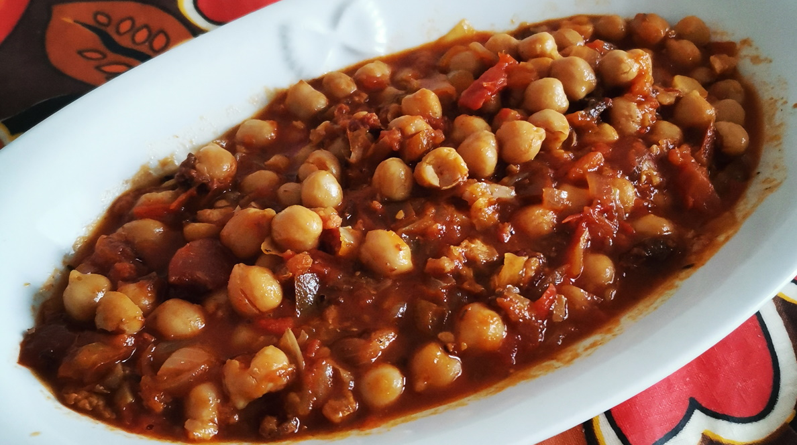

Easy
CUISINE
Canarian
1h 15'
1h 15'
Ingredients for 4 servings
Browning
- 100 g pancetta (or bacon, works too)
- 200 g beef (cubed small)
- 12 g olive oil (1 tbsp)
Fritura
- 3 ripe tomatoes
- 1 onion
- 0.5 bell pepper (half red and half green do well)
- 3 garlic cloves
- 1 tbsp flour
- Splash of wine (red or white)
- Salt
The rest
- 500 g boiled chickpeas (2 medium cans)
- Between a quarter and half of a chorizo asturiano and morcilla asturiana (hard to get outside Spain. Available online.)
- 1 bay leaf, a pinch of thyme, saffron and a tsp of sweet paprika
Utensils
Steps
Browning the meat
- In a pot heat up the oil with the pancetta until it renders some fat.
- Add and brown the beef, then remove it for later.
- The greasy bits from the beef should be left on another pot on a low simmer with some salt. Use it later as water.
Making the fritura
- Tomatoes can be cubed for the next step, or grated and added after the wine reduces. I haven't decided which is better yet.
- Add finely chopped onion. When transparent, throw in the also finely chopped pepper, crushed garlic and tomatoes, with some salt.
- After 5-15', open a circle in the middle and brown the flour, then pour in the wine and wait until it fully reduces.
Finishing up
- Two options for the chorizo and morcilla, either slice them or remove the peel and then shred them with your hands. If the products are good I'd go for the 2nd. Wash the chickpeas.
- To the fritura add a glass of water, the chorizo, morcilla, chickpeas and spices. Leave for 30-60'
- Check for salt and aim for a thick but still abundant sauce.
Variations
- Adding a piece of rib with the bone, or any bone typically used to flavor soups will enrich the dish even further.
- Some people add a pinch of cumin.
- You can add or substitute beef with ribs. It's traditional in parts of Tenerife.
- Instead of chickpeas, beans can be used, but recipe should change a little. I'm working on getting it right to make a dedicated post for it.
!
NUTRITION FACTS
Per serving
Calories472 kcal
Fat24 g
Carbohydrates35 g
Sugar11 g
Protein24 g
Vit. A5% DV
Vit. B26% DV
Vit. B316% DV
Vit. B55% DV
Vit. B616% DV
Vit. B1242% DV
Vit. C15% DV
Vit. E8% DV
Vit. K13% DV
Potassium17% DV
Phosphorus14% DV
Iron8% DV
Zinc22% DV
Copper8% DV
Selenium13% DV
CULINARY TIP
It's one of those dishes that stabilize and improve on its strong flavor profile after a night in the fridge.
CULINARY TIP
Browning the onion without burning is important to avoid having to correct with sugar, especially when substituting tomatoes with passata.
SERVING TIP
Usually served in a terracotta plate.
SERVING TIP
Although I do have it alone, in restaurants it's traditionally served alongside other dishes or even as a starter in small portion shared by everyone at the table.
Back to all recipes